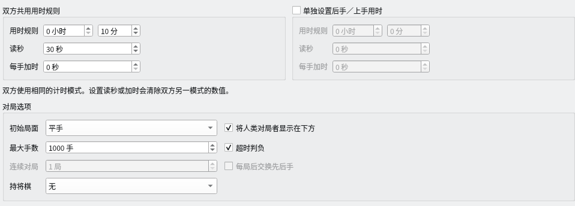
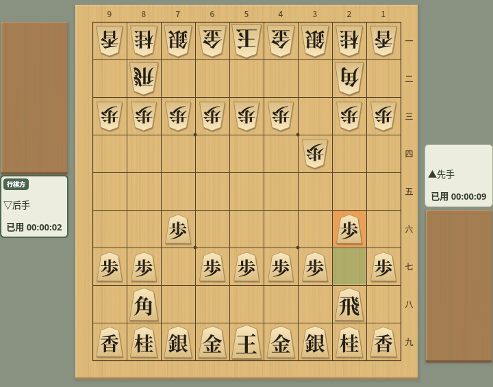
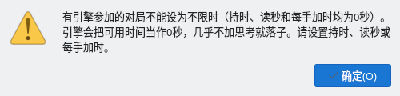
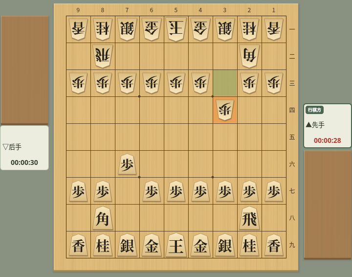

用时与时钟
介绍对局对话框中的用时设置，以及对局中时钟的走法
截图在 Linux 上以简体中文界面拍摄。
用时设置
在对局对话框中设置持时、读秒和每手加时
从菜单“对局”→“对局…”打开对局对话框，用时设置位于对话框中部。所有时间都是每位对局者各自的时间。
- 用时规则（持时）：整局可以使用的基本时间，以小时和分钟指定。
- 读秒：持时用完后，每一手可以使用的秒数。未用完的秒数不会留到下一手。
- 每手加时：费舍尔制的加时。第一手以及之后每走一步，都会把这个秒数加到剩余时间中。未用完的时间会累积。
- 单独设置后手／上手用时：不勾选时，左侧的数值同时用于先后双方（标题为“双方共用用时规则”）。勾选后，可以在右侧单独设置后手／上手的用时，左侧标题变为“先手／下手用时规则”。
- 超时判负（位于“对局选项”中）：勾选时，用完可用时间的一方超时判负。不勾选时，即使时间用完也可以继续对局。


用时设置：持时 10 分钟＋读秒 30 秒（双方共用）
先后双方使用同一种方式。在任一方的读秒中输入数值，双方的加时都会变为 0；输入加时，双方的读秒都会变为 0。对话框中的提示“双方使用相同的计时模式。设置读秒或加时会清除双方另一模式的数值。”就是这个意思。不能设置为先手读秒、后手加时。
为先后设置不同的用时时，可以分别设置的也只是持时、读秒长度和加时长度，方式仍然相同。
先后用时不同的对局，对局信息和棋谱的“用时规则”会同时记录双方，例如“先手 10:00+30 / 后手 05:00+30”（让子对局为下手、上手）。引擎之间的连续对局中勾选“每局后交换先后手”时，用时也随引擎一起交换，各引擎每局都使用相同的用时。
读秒与加时的计时方式
设置的时间在对局中如何减少、如何增加
只有轮到走棋的一方消耗时间，走棋后不会增加时间。持时用完即为超时。例如持时 5 分钟时，时钟从“00:05:00”开始，第一手用 3 秒走棋后剩余“00:04:57”。
持时剩余期间，从持时中扣除。如果在思考中途用完持时，就从这一手的中途进入读秒，之前思考的时间也计入消耗。
进入读秒后，只要在读秒秒数用完前走棋，下一手仍有相同的秒数。未用完的秒数不会累积。达到读秒秒数的那一刻即为超时（读秒 30 秒时，须在满 30 秒之前走棋）。持时设为 0 时，从第一手起就是每手 30 秒这样的对局。
对局开始时，会把第一手的加时加到持时中。之后，每在时限内走一步，就会加上下一手的加时。对方走棋不会增加自己的时间。
| 设置与操作 | 剩余时间 |
|---|---|
| 以持时 0 秒、每手加时 10 秒开始 | 10 秒 |
| 第一手用 3 秒走棋 | 10 − 3 + 10 = 17 秒 |
| 自己的下一手用 5 秒走棋 | 17 − 5 + 10 = 22 秒 |
| 以持时 5 分钟、每手加时 10 秒开始 | 5 分 10 秒 |
不限时
把持时、读秒和加时全部设为 0 秒，就可以不必在意时间
先后双方的持时、读秒和每手加时全部为 0 秒时，就是不限时对局。即使勾选“超时判负”，也不会超时判负。
只有人与人对局可以不限时。有引擎参加的对局无法开始，详见下面的无法开始对局的设置。
不限时对局中，时钟显示的不是剩余时间，而是各自已用时间的合计，例如“已用 00:00:09”。轮到自己走棋时，这一手的思考时间也会计入。走棋后的数值与棋谱栏“用时”的合计相同。


不限时：时钟显示各自已用时间的合计（先手 9 秒、后手 2 秒）
不足 1 秒的部分舍去。也不使用表示时间不足的警告颜色。
无法开始对局的设置
某些用时设置在点击“开始对局”时会显示警告
使用以下设置点击“开始对局”时，会显示“用时规则”警告，对局不会开始。对话框会保持打开，请重新设置时间后再次点击“开始对局”。显示警告时，不会保存设置。
| 设置 | 警告内容与修改方法 |
|---|---|
| 只有一方的持时、读秒和加时全部为 0 秒（勾选“单独设置后手／上手用时”时） | 不能只让一方不限时。请为双方设置用时。人与人对局时，把双方都设为 0 秒即可不限时对局。 |
| 有引擎参加的对局中，先后双方的持时、读秒和加时全部为 0 秒 | 引擎会把可用时间当作 0 秒，几乎不加思考就落子，因此不能不限时。请设置持时、读秒或每手加时。 |


有引擎参加的对局设为不限时并开始时显示的警告
第一次打开对局对话框时，时间全部为 0 秒；如果已注册引擎，后手／上手会设为该引擎。直接点击“开始对局”会显示这个警告，请先设置持时或读秒。设置的时间下次也会沿用。
时钟显示
在棋盘旁的对局者卡片上，以“时:分:秒”显示时钟
有时间限制的对局中，时钟显示剩余时间。只有轮到走棋一方的时钟会走动。不足 1 秒的部分进位显示，例如剩余 7.2 秒显示为“00:00:08”，变为“00:00:00”时即为超时。
读秒对局进入读秒后，显示读秒的剩余秒数。进入读秒后，在对方走棋期间，时钟也显示下一手可用的读秒秒数（读秒 30 秒时为“00:00:30”）。持时为 0 秒的读秒对局从一开始就这样显示。网络对局（CSA）也一样。
轮到走棋一方的时钟，在时间不足时文字颜色会改变。
- 没有读秒的对局：剩余 10 秒以内时变为“剩余 10 秒以内的文字”的颜色，剩余 5 秒以内时变为“读秒中／剩余 5 秒以内的文字”的颜色。
- 有读秒的对局：持时剩余 10 秒以内时变为“剩余 10 秒以内的文字”的颜色，进入读秒后变为“读秒中／剩余 5 秒以内的文字”的颜色。


读秒中：轮到走棋一方的时钟显示为警告颜色
两种颜色都可以在对局外观的“详细设置”标签页中更改。不限时对局中颜色不会改变。
中断对局后时钟会停止，选择“继续”后从中断时的剩余时间接着计时（对局的中断与继续）。
轮到自己走棋时，选择“对局”→“悔棋”会撤回自己的着法和对方的应着，时钟也会回到开始思考被撤回的那一手时的状态。被撤回的着法所用的时间，以及对方应着后思考的时间都会退还，思考时间从选择“悔棋”的那一刻重新计算。继续选择时每次再退回两手，最多可以退回到对局的初始局面。